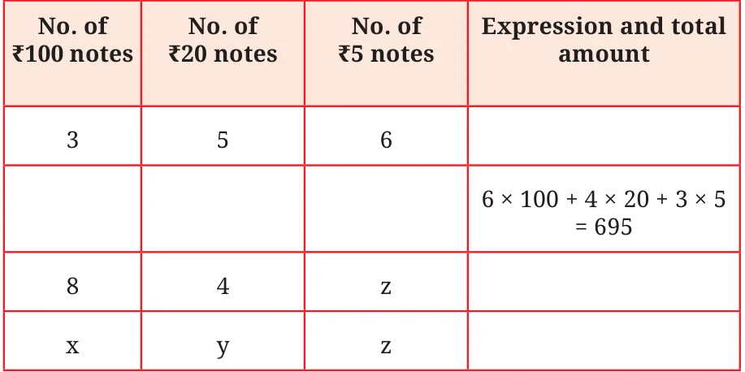
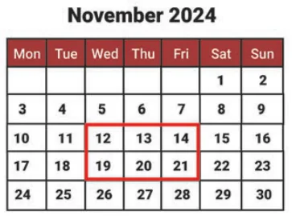

- 1.Write formulas for the perimeter of:
- (a)triangle with all sides equal.
- (b)a regular pentagon (as we have learnt last year, we use the
word ‘regular’ to say that all sidelengths and angle measures are equal)
- (c)a regular hexagon
- 2.Munirathna has a 20 m long pipe. However, he wants a longer
watering pipe for his garden. He joins another pipe of some length to this one. Give the expression for the combined length of the pipe. Use the letter-number ‘k’ to denote the length in meters of the other pipe.
- 3.What is the total amount Krithika has, if she has the following
numbers of notes of ₹100, ₹20 and ₹5? Complete the following table:

- 4.Venkatalakshmi owns a flour mill. It takes 10 seconds for the roller
mill to start running. Once it is running, each kg of grain takes 8 seconds to grind into powder. Which of the expressions below describes the time taken to complete grind ‘y’ kg of grain, assuming the machine is off initially?
- (a)\(10 + 8 + y\) (b) \((10 + 8) \times y\)
- (c)\(10 \times 8 \times y\) (d) \(10 + 8 \times y\)
- (e)\(10 \times y + 8\)
- 5.Write algebraic expressions using letters of your choice.
- (c)2 less than 13 times a number
- (d)13 less than 2 times a number
- 6.Describe situations corresponding to the following algebraic
expressions:
- (a)\(8 \times x + 3 \times y\)
- (b)\(15 \times j - 2 \times k\)
- 7.In a calendar month, if any \(2 \times 3\) grid full of dates is chosen as
shown in the picture, write expressions for the dates in the blank cells if the bottom middle cell has date ‘w’.
